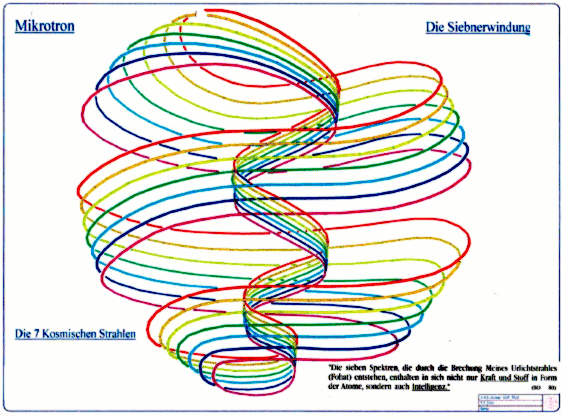

Home
Vergangene Veranstaltung von Perlenschnur e.V.
13.07. - 15.07.2018 in Wöllstein Thema: Mikrotron 1
Unser Gastreferent, Theophil Würth, stellt uns
einen Ausschnitt seiner 30-jährigen Forschungen zur
holistischen Betrachtung der Schöpfung vor.
Dazu gehört u.a. das „Mikrotron“, welches jener
Struktur gleich kommt, die bei Leadbeater & Besant
„Anu“ oder „Ur-Atom“ genannt wurde.
Wir werden über die gesamte Veranstaltung
hindurch wieder von Andreas Körber mit seinen
musikalischen Darbietungen begleitet, die uns
körperlich-sinnlich die Wirkung dessen wahrnehmen
lassen, von dem in den theoretischen Themen-
Blöcken die Rede ist. Die heilsame Wirkung der
Musik beruht auf Resonanzen und Dissonanzen, die
uns helfen, unser Gleichgewicht wieder zu gewinnen
und Physik körperlich und emotional zu erfahren.
Programm (als Flyer):
|

|
Seminar Mikrotron 1
mit Theophil Würth
Ein anderer Zugang zu den kleinsten Einheiten der Schöpfung in unserem Universum
|
==================================
Freitag, 13.07.2018 (Einlass ab 16 Uhr)
==================================
17:30 bis 18:00 Uhr Vorstellungsrunde der Referenten
Zum Einchecken, Zelt aufstellen und Ankommen.
ca. 18 Uhr gemeinsames Abendessen zum Kennenlernen
(bitte etwas dafür mitbringen, z.B. Salate, Brötchen,
Aufstrich, Getränke) und anschließendem gemütlichen
gemeinsamem Abend (je nach Wetter am Lagerfeuer oder
im Wintergarten) zum Gedankenaustausch, Geschichten
erzählen und Singen/Tönen mit Andreas Körber.
==================================
Samstag, 14.7.2018 (Einlass für neu
Eintreffende ab 9:00 Uhr)
==================================
10:00 - 10:30 Uhr Vorstellungsrunde
10:30 – 11:30 Uhr
Vortrag von Theophil Würth über das „Mikrotron“ – 1. Teil
12:00 – 13:00 Uhr
Vortrag von Theophil Würth über das „Mikrotron“ – 2. Teil
13:00 – 14:30 Uhr Mittagspause (Restaurants im Ort
vorhanden, ev. Pizzabestelldienst nutzen oder
mitgebrachtes Essen vor Ort einnehmen)
14:30 – 15:30 Uhr
Vortrag von Theophil Würth über das „Mikrotron“ – 3. Teil
16:00 – 17:00 Uhr
Vortrag von Theophil Würth über das „Mikrotron“ – 4. Teil
17:30 – 18:30 Uhr
Diskussion der vorgebrachten Ansätze und Klärung von
Übereinstimmungen bzw. Aufdeckung von Widersprüchen
18:30 – 19:00
Ingrid Schröder: Zusammenfassung der Tagesthemen
19:00 – 20:30 Uhr Abendessen (Restaurants im Ort
vorhanden, ev. Pizzabestelldienst nutzen oder
mitgebrachtes Essen vor Ort einnehmen)
20:30 – 22:00 Uhr Diskussionsrunde und
Gedankenaustausch (je nach Wetter am Lagerfeuer oder
im Wintergarten) mit musikalischen Einlagen von
Andreas Körber
==================================
Sonntag, 15.07.2018
==================================
10:00 – 11:00 Uhr
Vortrag von Andreas Körber:
Verbindung von Spiritualität, Kunst und Technik – 1. Teil
11:30 – 12:30 Uhr
Vortrag von Andreas Körber:
Verbindung von Spiritualität, Kunst und Technik – 2. Teil
13:00 – 14:00 Uhr
Ingrid Schröder: Zusammenfassung der Tagesthemen und
Abschlussdiskussionsrunde
Wer noch Zeit und Lust hat, kann zum gemeinsamen
Mittagessen bleiben und mit den Referenten persönliche
Gespräche führen (jeder kann beim Pizzadienst bestellen
oder sein mitgebrachtes Lunchpaket nutzen).
nach 16:00 Uhr
Auf Wunsch Verlängerung bis in die Abendstunden
Wir beginnen morgens jeweils pünktlich zu den
angegebenen Zeiten.
Der Rest ist nur grob geplant und kann sich zeitlich aus dem
Fluss des Geschehens heraus ändern. Wir wollen dennoch
für ausreichende Pausen sorgen.
8888888888888888888888888888
Ingrid Schröder übernimmt an diesem Wochenende die Moderation und Zusammenfassung der vorgetragenen Themen.
Veranstaltungsort:
D - 55597 Wöllstein, Ziegelhüttenstr. 14
(Rheinland-Pfalz, nächster Bahnhof in 55543 Bad Kreuznach;
öffentliche Busverbindung vom Bahnhof nach Wöllstein
bzw. Shuttle-Dienst durch den Verein)
Wer auf dem Grundstück im selbst mitgebrachten Zelt
übernachten will, muss dies vorher abklären (wegen
beschränkten Platzangebotes).
Zimmerbuchung durch den Teilnehmer selbst, z.B. hier
gemeinde-woellstein.de/essen-trinken-schlafen/unterkuenfte
oder
boardinghouse-alte-bank.de
Auch hier organisieren wir einen Shuttle-Dienst
zu Unterkünften in den Nachbarorten,
wenn es keine öffentlichen Busse gibt.
Teilnehmerzahl aus Platzgründen beschränkt.
Bitte daher um rasche Anmeldung. Wir behalten uns eine
Änderung des Programms, auch inhaltlich, vor.
Die Teilnahme an dieser geschlossenen Veranstaltung*) des Vereins "Perlenschnur" (alle Tage) erfolgt gegen eine
Teilnahmegebühr von 100,-- Euro pro Person.
Getrennte Buchung möglich (Samstag 80,-- und Sonntag 40,-- EUR).
*) Teilnehmer erhalten mit Anmeldebestätigung eine Gastmitgliedschaft für 4 Monate, diese berechtigt zum Besuch einer Folgeveranstaltung zu einem ermäßigten Preis.
Die Finanzen sollten kein Hinderungsgrund für die Teilnahme
an der Veranstaltung sein, etwa Ratenzahlung oder späteres
Tätigwerden für den Verein. Sprechen Sie uns an.
Anmeldung zur Tagung formlos per E-Mail an:
office@perlenschnur.org
Verein Perlenschnur e.V.
Vorstand: Ingrid Schröder und Dipl.-Phys. Gabi Müller
Sitz: D - 55597 Wöllstein, Ziegelhüttenstr. 14
Telefon Ingrid Schröder, Tel 0049 (0) 6703 2965
E-Mail: office@perlenschnur.org
Web: www.perlenschnur.org
|
Hier eintragen in den Newsletter von perlenschnur.org und viva-vortex.de
Home
| Termine
| Videos
| Links
| Impressum
| Datenschutz
|